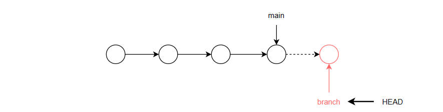

- 初始化仓库 init
-
为当前工作目录生成一个隐藏文件夹.git，里面是git配置信息
初始化后，该目录将被git托管，可以追踪代码的任何变化
如果生成的.git被删除，有关的托管信息将丢失
具体的配置文件.gitconfig位于系统盘用户目录下：C:\Users\cnplaman
文件内容就是Git配置的用户邮箱等基本信息
git init
- 提交文件到暂存区 add
-
.表示所有文件；也可以指定需要提交的具体的文件
单个文件体积大小不要超过50MB
git add .
- 提交到本地仓库 commit
-
每次提交都有一个commitId记录
git commit -m ""
- 查看文件状态 status
-
git status
Git文件状态
| untracked |
未记录的；VS code中使用标记U |
| modified |
修改过的；VS code中使用标记M |
| staged |
已暂存的 |
| committed |
已提交的 |
- 撤销本地修改 checkout
-
丢弃工作区的修改
修改了文件，但是没有add到暂存区，使用该命令可以撤销对文件的修改，相当于在编辑环境中使用了CTRL + Z操作
修改了文件，已经add到暂存区，使用该命令，可以拉取暂存区的文件到工作区，覆盖当前文件，相当于放弃了对文件的修改，即和暂存区保持一致
git checkout -- file
- 查看本地仓库提交记录 log
-
按q退出
$ git log
commit cc355cbd2a03d61f0ef440706fee7c6257f9fee3 (HEAD -> main, origin/main, origin/HEAD)
Author: glpla <1942194789@qq.com>
Date: Wed Jan 3 12:34:20 2024 +0800
web
commit 32eefc91550a970775689f1f2a7b239bd2b22753
Author: glpla <1942194789@qq.com>
Date: Wed Jan 3 10:48:20 2024 +0800
web
- 查看远程仓库提交记录 reflog
-
按q退出
main总是指向最新的提交；而HEAD指向当前的活动分支；如果没有分支，就指向主分支main
HEAD前面的字符串序列是提交的版本号；利用这个可以实现版本穿梭
示例中没有分支，所以HEAD指向主分支main
$ git reflog
cc355cb (HEAD -> main, origin/main, origin/HEAD) HEAD@{0}: commit: web
32eefc9 HEAD@{1}: commit: web
aae5d51 HEAD@{2}: commit: web
065c08e HEAD@{3}: commit: fn
- 撤销本地/远程提交 reset
-
撤销远程提交 - 版本穿梭
git reset --hard 版本号
Head is now at xxxxx
撤销本地提交
git reset commitId
- 新项目第一次推送 - 完整流程
-
git init
git add .
git commit -m "first commit"
git branch -M main
git remote add origin url
git push -u origin main
- 查看关联的远程仓库
-
$ git remote -v
origin https://github.com/glpla/glpla.github.io.git (fetch)
origin https://github.com/glpla/glpla.github.io.git (push)
- 删除关联的远程仓库
-
以便重新关联新仓库
$ git remote remove origin
- 通过分支实现项目的分工协作
- 各分支的操作并不影响主分支；且分支的进度通常要领先于主分支
- 当分支合并到主分支后，主分支的整个时间线才往前推进，进度才能和分支保持一致
- main总是指向最新的提交；而HEAD指向当前的活动分支；如果没有分支，就指向主分支main
- 只有提交commit过1次后才能查看分支
-
无分支时，HEAD指向主分支

分支单独工作，HEAD指向活动分支
分支合并到主分支
- 查看分支
-
当前分支以*号表示，且颜色为绿色
//不带参数：查看本地分支
$ git branch
dev
* master
//查看所有分支
$ git branch -a
dev
* master
//查看分支最近提交信息
$ git branch -v
dev 29aee33 1st commit
* master 29aee33 1st commit
//查看远程分支
$ git branch -r
- 创建分支
-
$ git branch branch_name
- 切换分支 checkout
-
指定要切换的分支名
$ git checkout dev
Switched to branch 'dev'
- 合并分支 merge
-
通常在主分支合并其它分支
将其它分支合并到主分支；主分支会前进一次forwards
原有分支仍然存在
$ git merge dev
Updating 29aee33..c9f8938
Fast-forward
demo.txt | 0
1 file changed, 0 insertions(+), 0 deletions(-)
create mode 100644 demo.txt
- 删除分支
-
指定删除的分支名
只能在当前分支删除其它分支
$ git branch -d dev
Deleted branch dev (was c9f8938).
- 分支操作
- 请使用shell完成以下操作
-
创建新文件夹Demo作为工作目录
初始化工作目录
查看分支
创建测试文件test.txt并add、commit提交到本地仓库
查看分支
创建分支dev
切换至分支dev
查看分支
创建测试文件demo.txt并add、commit提交到本地仓库
切换回master分支，查看工作目录中文件的变换情况
合并分支dev到主分支
查看分支
删除分支dev
查看分支
-
冲突
.主分支提交前进的同时，某一分支也提交。当主分支合并分支时，就会出现冲突
.尽量避免同时操作同一个文件
.主分支面向生成环境，应只做阶段性的合并
.日常工作应使用开发分支和团队分支、个人分支：个人分支合并到团队分支；团队分支合并到开发分支